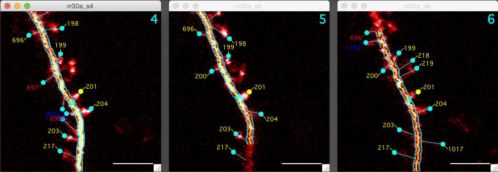
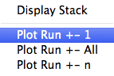
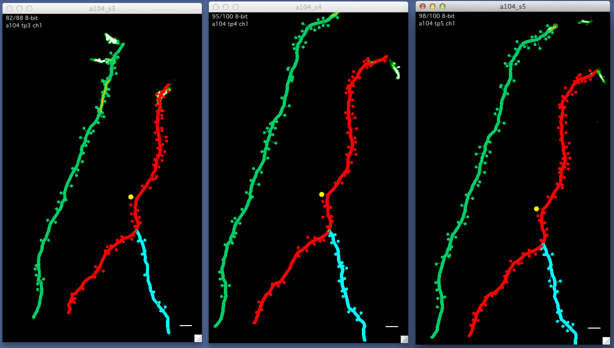
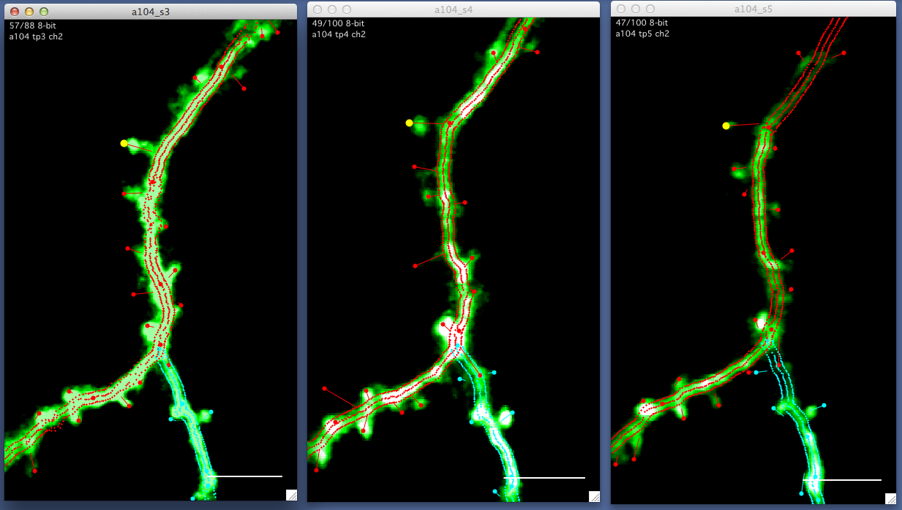
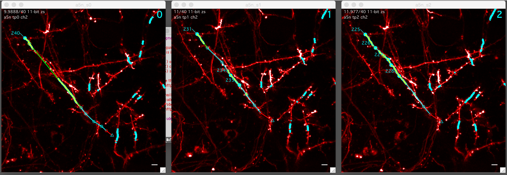

Run plot

A run plot is a sequence of stack plots, one for each session in a map. The image above shows a run plot of spines. Spine #201 is selected in each of three stack plots.
There are three types of run plots:
- Stack Run. In its simplest form, a run plot showing the sequence of stacks in a map.
- Segment Run. The same as a stack run plot but connected segments are selected, displayed, and optionally zoomed.
- Object Run. The same as a stack run plot but individual stack db points (3D points) are followed across sessions in a map. One example is a run of spine objects across all stacks/sessions in a map.
Opening a run plot

A run plot can be opened from multiple places in the interface. In general, a right-click on a session or object will open a contextual popup-menu (shown on the left).
- Right-click an object in a map plot.
- Right-click an object in a search results.
- Right-click a session in the expanded main map maker panel
Navigating a run plot
Each stack plot plot in a run plot behaves exactly like an individual stack plot. For example, left-click to select individual objects in any of the stack-db plots within a run plot.
There are additional interface elements available in a run plot.
Control+click on an object in one stack plot of a run plot will select that object in all other stack plots of the run plot. If a stack plot at a given session is missing the object (for example, the object was subtracted), the image will snap to the region where the point 'would be'.
Keyboard-l (that is lower-case 'l' as in 'link') will link all stacks in a run plot allowing them to be zoomed and panned in synch. Linking can be turned on and off again by pressing keyboard-l.
keyboard a/s/p/b, see below
Editing dynamics in a run plot
The dynamics between stack-db objects and segments can be edited in a run plot.
- a : The selected object is marked as Addition.
- s : The selected object is marked as Subtraction
- p : The selected objects are marked as Persistent. Requires a selection in two timepoints, see below.
- b : The selected object is marked as Bad. This is only available for stack-db objects, it is not available for segments.
Persistent is a special case
When two objects are connected between two sequential timepoints/sessions we refer to them as 'persistent'. To connect two points and make them persistent, both points need to be selected (in their respective timepoints) and the point in the latter timepoint needs to be marked persistent.
- Click in the source stack window and select an object. For example, timepoint 2.
- Click in the destination stack window and select an object. For example, timepoint 3.
- Press keyboard 'p' in the destination stack window. In this example, timepoint 3.
Important: The keyboard commands above will default to editing the dynamics of stack-db objects. To edit the dynamics between segments, turn on the global option in the main Map Manager panel by checking 'Edit Segments'.
All of these keyboard commands have corresponding right-click contextual menus. Select a point and right-click to open the contextual menu.
Using stack db object tags in a run plot
Turn on object tags for a given stack window using keyboard 't'. The dynamics of each object is encoded in the color of the tag, green for addition, red for subtraction, and yellow for persistent. Objects that are in the same run will have the same number in each of the stack plots. Added objects get a new number. This system is designed to quickly visualize the connectivity between stack db objects.

Example run plot following a spine (yellow circle) through multiple timepoints in a map.

Same run plot as above after zooming in. All stacks in a run plot can be synchronized with keyboard 'l' (as in Link) so that zooming, panning, and setting the slice in one stack plot of a run will propagate to all other stack plots of that run.

A segment run plot with the same segment selected in all timepoints. Note the difference in scale compared to the spine run examples. All scale bars are 5 um.